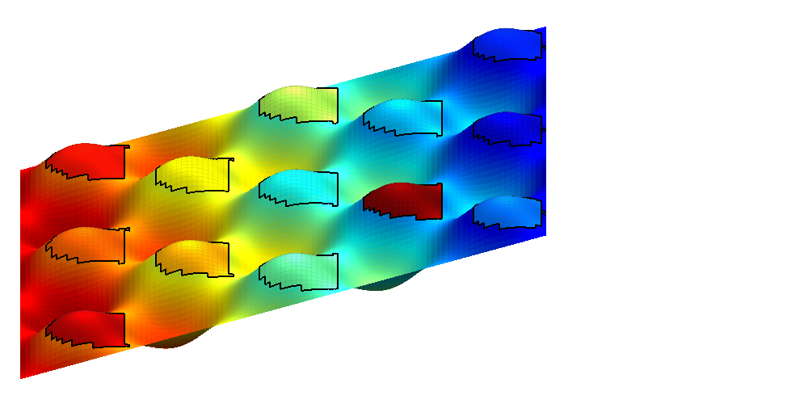
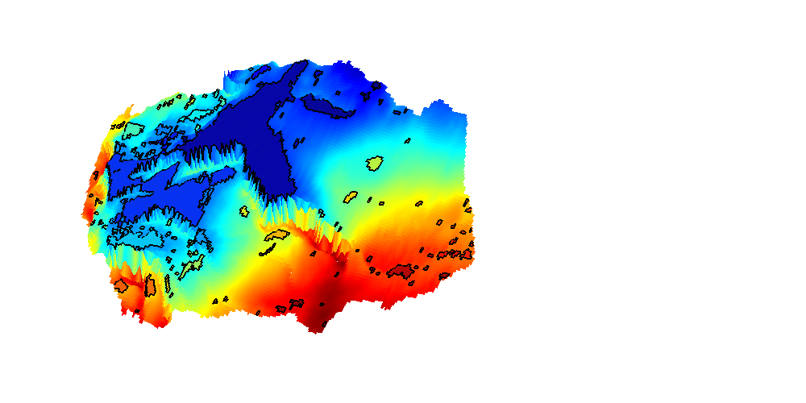
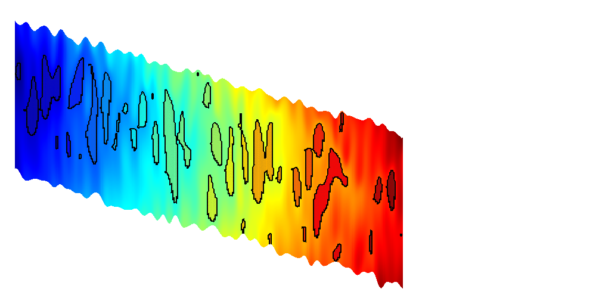

Contents
Interactive spill point analysis of top surface grids
This example demonstrates the use of the interactive viewer for viewing and finding structural traps for CO2 migration. This tutorial is primarily concerned with interactive usage: For general information of trap analysis, see the showTrappingStructure example.
Select trapping algorithm
useCell = true; switch useCell case true method = 'cell'; otherwise method = 'node'; end % Check if the script is run interactively isInteractive = numel(dbstack) == 0;
Explore a synthetic grid
We first create a simple synthetic grid to demonstrate the interactive trapping. This grid is created by producing a simple Cartesian geometry and perturbing the z coordinates by a periodic function based on x and y to get several local traps. Additionally, to create a hierachy of traps, we slant the grid.
L = 1000; L_p = L/5; H = 10; G = cartGrid([101 101 1],[L L H]); % Set new coordinates, compute geometry information G.nodes.coords(:,3) = 100 + G.nodes.coords(:,3) + ... G.nodes.coords(:,1)*0.01... -2*sin(pi*G.nodes.coords(:,1)/L_p).*... sin(pi*G.nodes.coords(:,2)/L_p); G = computeGeometry(G); % Create top surface grid Gt = topSurfaceGrid(G);
Show interactive plot
We plot the top surface grid in the interactive viewer. Initially the possible structural traps are shown, colorized by the volume of each structural trap on a white grid.
The following functionality is present:
- Left clicking on a trap will colorize the trap and all other traps that are downstream to that trap along with the path between them. Left clicking shows an estimate of where and how any slowly injected CO2 will migrate from the click position. When left-clicking, two additional plots are produced:
* The upper figure is a pie chart showing the approximate volumes
of both the clicked trap (direct volume) and the volume of traps
along the migration path (migration volume) as well as the volume of
the traps which are not on the migration path. By exploring the grid
interactively, one can try to find the best possible injection site
for a top surface grid with regards to long term migration. * The second figure shows a logarithmic bar chart of the trap volumes
along with their position along the migration path. This is useful
for several reasons; One being that the quality of the dataset may
impact the correctness of far away traps, another being that far
away traps will likely meet a slower CO2 front, making the model of
infinitesimally slow migration better.- Right or ctrl-clicking on a trap will open a new plot showing the trap in detail along with the region around it. The largest possible structural trapping volume for the region will be indicated in red and blue.
- Middle mouse or shift-clicking on a trap will show all traps that are upstream to the current trap much in the same manner as left mouse click. This can be used to find possible injection sites which will migrate over time to a large reservoir volume.
- The toolbar in the figure window has several functions:
* Toggle display of unselected traps.
* Toggle display of spill regions. Spill regions determine which trap
gas injected in an area will migrate to. Regions which spill out of
the grid are marked in blue. * Toggle lighting. Lighting can be computationally intensive in
MATLAB, but makes it easier to see local changes in topology.* Toggle contour lines. Only available when plotting atlas grids.
* Reset view. The selection algorithm works best from a top down
view. * Setup VE simulation. The currently clicked cell will become an
injector in a vertically averaged CO2 migration simulation. The user
can setup injection rates and timesteps through a simple user
interface and stop simulations by closing the visualization
window.h = interactiveTrapping(Gt, 'method', method, 'light', true); view(180, 50) disp('Showing synthetic dataset... Close to continue') if isInteractive waitfor(h) end
Trap level 1: 13 traps identified Start find rivers Showing synthetic dataset... Close to continue
Interact with a more interesting dataset
By passing in the name of a CO2 Storage Atlas grid, the function automatically generates the grid for us. We select the Johansen formation and apply some coarsening to make the grid smaller. Note that full resolution should be used if possible to get the best accuracy.
h = interactiveTrapping('Johansenfm', 'coarsening', 2, 'method', method); view(-70, 80) disp('Showing CO2 Atlas dataset... Close to continue') if isInteractive waitfor(h) end
Trap level 1: 327 traps identified Trap level 2: 54 traps identified Trap level 3: 11 traps identified Trap level 4: 2 traps identified Warning: purging 34 bad traps with 0 spill value. Start find rivers Showing CO2 Atlas dataset... Close to continue
Grid from the IGEMS (Impact of Realistic Geologic Models on Simulation of CO2 storage) project
We read and process a grid from the folder data/igems/eclipsegrids. These grids are very large, so this part of the example requires C-accelerated geometry computation. For more information, see the IGEMS website at http://www.nr.no/nb/IGEMS.
require mex G = readIGEMSIRAP('OSS', 1, 'coarse', [2 2]); Gt = topSurfaceGrid(G);
Activate trapping
h = interactiveTrapping(Gt, 'method', method); view(180, 50) disp('Showing IGEMS dataset... Close to continue') if isInteractive waitfor(h) end
Trap level 1: 61 traps identified Trap level 2: 12 traps identified Trap level 3: 1 traps identified Start find rivers Showing IGEMS dataset... Close to continue